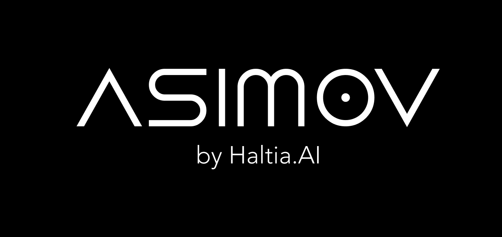

Organizers and affiliations:

Dr. Tolga Çöplü, Haltia.AI
(tolga@haltia.ai)
Dr. Tolga Çöplü is an expert in integrating
communication technologies with machine learning,
boasting over two decades of research and
development experience. His focus is on the
practical application of neurosymbolic AI to enhance
the personalization and efficiency of AI systems.
Dr. Çöplü has authored numerous academic papers and
is pivotal in applying symbolic AI with large
language models.
Arto Bendiken, Haltia.AI
(arto@haltia.ai, https://ar.to)
Arto Bendiken brings over 25 years of experience in
software engineering and artificial intelligence,
with a specialization in Semantic Web technology and
knowledge graphs. His pioneering work has
significantly influenced the development of
decentralized graph database technologies. As
co-founder and CTO of Dydra, he developed solutions
that now support Haltia.AI’s AI systems, and he
leads the design of the KNOW ontology.
Andrii Skomorokhov, Haltia.AI
(andrii.skomorokhov@haltia.ai)
Andrii Skomorokhov has over 15 years of experience
developing complex data management systems and AI
applications. At Haltia.AI, he focuses on applying
Large Language Model (LLM) adapters to construct
comprehensive knowledge graphs from extensive
datasets, enhancing AI personalization and mobile
assistant technologies. His research contributes to
the development of privacy-centric, on-device AI
solutions.
Keywords: Conversational knowledge
capture, ontology-guided knowledge capture, KNOW
ontology, symbolic representation, knowledge graphs,
large language models.
Target audience:
- Early-stage researchers in neurosymbolic AI
- Experienced Semantic Web/Knowledge Graph
researchers
- AI practitioners in real-world applications
- Researchers interested in personal data
extraction from LLM conversations
- Professionals seeking ontological knowledge
capture techniques
Why participate?
- Understand the fundamentals of neurosymbolic AI.
- Gain skills in generative AI and its
applications.
- Learn to apply advanced knowledge capture in
real-world scenarios.
- Master different approaches to the generation of
personal information in the era of generative AI
- Explore integration with the KNOW ecosystem for
enhanced AI personalization
Requirements to participate:
Participants should bring laptops or tablets to
engage with provided digital materials:
- Handouts and printed materials will be provided
- Code and notebooks accessible on GitHub
Participants are encouraged to review the
KNOW ontology webpage and the GitHub
repository prior to attending the tutorial:
Contents of the Tutorial:
- Overview and Introduction: Framing the
neurosymbolic challenge and its relevance.
- Neurosymbolic Synthesis
- The KNOW Ontology in Action
- Hands-on Ontology-Guided Knowledge
Capture
- Discussion on the future of AI research and
applications
Tutorial webpage URL: https://ekaw2024.asimov.so